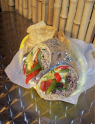
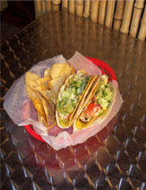
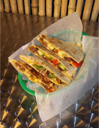

Menu
Ⓥ indicates vegetarian option
The Hookup: Add any or all of these items to your burrito or taco free of charge! Pico de gallo, lettuce, pickles, cabbage, jalapenos, cheese, cilantro, crushed tortilla chips
Add-Ons: Add any or all of these items to your burrito or taco for a small fee! Sour cream, ranchero sauce, potatoes, any protein, freshly made guacamole

Cali Burrito Specialties
Named for the places we love best, these classic flavor combos will knock your socks off! Served with our homemade chips.
The Big Sur
steak, pinto beans, rice, ranchero sauce and cheese
The Old Monterey
chicken, black beans, rice, cheese and guacamole
The El Dorado
pork, pinto beans, rice, ranchero sauce and cheese
The Mendocino
ground beef, pinto beans, rice, cheese and pico de gallo
The Cortez
ground beef, pinto beans, rice, cheese and pico de gallo
Ⓥ The Humboldt
smoked tofu, black beans, brown rice, sour cream & cheese
Ⓥ The Cambria
grilled veggies, black beans, brown rice, guacamole & cheese
Ⓥ The Nepenthe
falafel, rice, black beans, pickles, tahini sauce
Ⓥ The Shasta
seitan, zesty pepper sauce, brown rice, black beans and cabbage
Breakfast Burritos
Served all day
Ⓥ The Arcata
curried tofu scramble, potatoes, homemade ranchero sauce, black beans and cheese
Huevos Grande
eggs, potatoes, homemade ranchero sauce, black beans, cheese
Build your own burrito or rice bowl
Served with homemade chips
Pick a tortilla
flour or whole wheat
Select a rice
white cilantro-lime or brown rice
Pick a bean
black or pinto
Choose a protein
scrambled egg, Ⓥ tofu scramble, Ⓥ falafel, Ⓥ smoked tofu, Ⓥ grilled veggies, ground beef, steak, pork, chorizo, chicken, or shrimpConcerned about carbs? Save a tortilla, do a bowl!

Tacos
2 per order. Each taco is served in a crispy corn tortilla which is wrapped in a soft flour tortilla. Served with cheese, pico de gallo, our cliantro-lime dressing and homemade chips.
The San Diego
deep fried fish and shredded cabbage
The Sonoma
ground beef, cheese and lettuce
The Santa Barbara
chicken, lettuce, guacamole and cheese
The Zeda
pork, cheese, and lettuce
Ⓥ The Santa Cruz
smoked tofu, cheese and cabbage

Quesadillas
A tortilla topped with your choice of filling, folded and grilled
Ⓥ The Purest
our Cali cheese blend
The Manresa
steak, grilled veggies, and cheese
The Carmel
ground beef and cheese
The Capitola
chicken and cheese
Ⓥ The Cardiff
smoked tofu, grilled veggies, and cheese
Sides
Ⓥ Chips
homemade mix of corn and flour tortillas
Ⓥ Guacamole
8 oz of our freshly-made guac
Ⓥ Rice and Bean combo
select a rice : white cilantro-lime or brown rice
decide upon a bean : black or pinto
Ⓥ Side of potatoes
Ⓥ Salsa